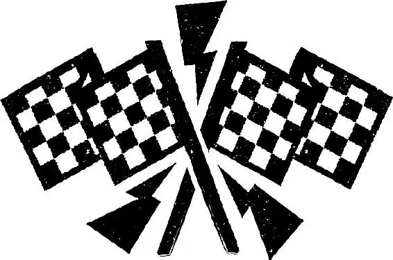

As the sun peeked over the mountains the next morning, Mater yawned, stretched, and drove out to the edge of the new road. Doc drove up next to him, and the two autos surveyed the blacktop. It reached into the horizon, as flat and even as a field of fresh snow.
“He’s done,” Mater said quietly. “He musta finished it while we were all sleepin’.”
“Good riddance,” Doc grumbled. As he drove away, he passed the rest of the townsfolk, who were gazing sadly at the road, thinking Lightning was gone.
“He’s gone?” Flo asked.
“Well,” Sarge said, trying to rally his friends and keep up a brave face, “we wouldn’t want him to miss that race of his.”
“Oh, dude,” Ramone said to Sheriff, whose eyes were sparkling, “are you crying?”
“What?” Sheriff was choked up, but he didn’t want the others to see what a big softy he was. “No, no, no!” he insisted. “I’m happy. I don’t have to watch him every second of the day anymore. I’m glad he’s gone.”
Red burst into tears and drove away, knocking over Luigi’s stack of tires—again.
“What’s wrong with Red?” a voice asked. It was Lightning.
“Oh, he’s just sad ’cause you left town,” Mater explained, “and went to your big race to win the Piston Cup that you’ve always dreamed about your whole life and get that big ol’ sponsor and that fancy helicopter you were talkin’ about—”
“Lightning! There you are!” The townsfolk gathered around the race car, chattering happily.
“Wait a minute!” Mater said, the truth finally dawning on him. “Aw, I knew you wouldn’t leave without saying good-bye.” He gave Lightning a friendly punch with his tire.
“What are you doing here, son?” Sheriff demanded. “You’re gonna miss your race. Now, don’t worry, I’ll give you a police escort, and we’ll make up the time.”
“Thank you, Sheriff,” Lightning said gratefully. “Well, you know, I can’t go just yet.” He smiled playfully.
The town looked at one another in confusion. “Why not?” Sheriff asked.
“I’m not sure these tires can get me all the way to California,” Lightning replied, glancing at Luigi and Guido.
“Pit stop?” Guido asked hopefully.
“Yeah,” Lightning said. “Does anybody know what time Luigi’s opens?”
“Oh-ho-ho!” Luigi said, laughing. “I can’t believe it!” He quickly flipped over his CLOSED sign to read OPEN, and the two Italian cars rolled aside so that Lightning could come into their garage for a complete overhaul. “Four new tires?” Luigi cried, thrilled. “Grazie, Mr. Lightning, grazie.”
“Would you look at that?” Flo said as the townsfolk peered at Lightning through Luigi’s freshly cleaned window.
“Our first real customer in years!” Luigi said as he secured Lightning in a lift. “I am filled with-a tears of ecstasy, for this is a most glorious day of my life.”
“All right, Luigi, give me the best set of black walls you got,” Lightning ordered.
The lift dropped sharply down. “No, no, no, no,” Luigi said as he made his way to a special curtained-off section of the store. “You don’t-a know what you want. Black wall tires, they blend into the pavement, but these—” He whipped back the curtain. “Whitewall tires—they say, ‘Look at me! Here I am! Loooove me!’”
“All right,” Lightning said mildly, “you’re the expert. Oh, and don’t forget the spare.” And with that, Luigi and Guido got to work.
“Uh-huh-huh?” Luigi said with a grin as Lightning admired his new whitewalls in a three-way mirror. “What did Luigi tell you, eh?”
“Wow, you were right,” Lightning admitted, smiling at his flashy new tires. “Better than a Ferrari, huh?”
Luigi’s smile evaporated. “Eh, no.”
Lightning decided he’d better check out all the stores in town. “Wow,” he said as he tasted some of Fillmore’s organic fuel. “This organic fuel is great! Why haven’t I heard about it before?”
“It’s a conspiracy, man!” Fillmore shouted. “The oil companies got a grip on the government. They’re feeding us a bunch of lies, man!”
“Okay,” Lightning said slowly. “I’ll take a case!”
Next, he went to Sarge’s Surplus Hut and picked out some night-vision goggles for his drive to California. Then he chose a few Radiator Springs bumper stickers from Lizzie’s memorabilia shop. At Ramone’s, he got a snazzy new paint job—with a brand-new lightning bolt design. “Yeah!” Lightning said, laughing as he looked at the fresh paint. “Ka-chow!”
When Sally saw Lightning later that day, she couldn’t believe his makeover. He was sparkling and detailed to perfection.
“Ka-pow!” Lightning said, showing off his new look. “What do you think? Radiator Springs looks pretty good on me.”
Sally laughed. “I’ll say!” She checked out his new paint job. “Ka-chow!” she said admiringly.
“You’re gonna fit right in, in California,” she continued, looking at him all the while.
Suddenly, Sally realized something. “Oh my goodness, it looks like you’ve helped everybody in town.”
“Yeah, everybody except one… . ,” Lightning said, cuing the town to light up their signs. One by one, the lights flickered on.
“They fixed their neon,” Sally said quietly, taking in the beauty of the town.
“Just like in its heyday, right?” Lightning said.
Sally sighed. “It’s even better than I pictured it. Thank you.”
Just then, Flo pulled onto the brand-new street. “Low and slow?” she said to Ramone.
“Oh, yeah,” he agreed, and in the next moment, he and his wife were cruising down the strip. The two cars snuggled close, happier than they had been in years.
Lightning tried to take Sally for a cruise, but Lizzie stole him away.
“Lizzie!” Sally said in protest.
Mater was right there. “Miss Sally, may I have this cruise?” he asked.
Sally smiled. “Of course.”
Lightning tried to dodge away from Lizzie, but she wouldn’t let him escape her.
“I remember when Stanley first asked me to take a drive with him,” she said, reminiscing.
Lightning was wondering how he could get to Sally when Mater towed him away. Lizzie happily continued to talk to herself.
“Hey!” Lightning said as he finally found himself next to Sally.
“Thanks, Mater,” Sally said to the tow truck.
“Good evenin’, you two.” Mater gave Sally a broad wink, then drove off backward.
Just as Lightning and Sally were about to start cruising, Flo pulled up to them. She was looking at the horizon.
“Is that what I think it is?” she asked.
A wall of headlights was coming straight in their direction.
“Customers?” Sally asked.
“Customers!” Flo cried, her voice edged with excitement. The town looked great. Maybe this was finally their big chance to get back on the map. “Customers, everybody, and a lot of ’em. You know what to do. Just like we rehearsed.”
Suddenly, a helicopter roared overhead, sweeping a light across the town.
“It’s the ghost light!” Mater cried. Terrified, he drove away.
“We have found Lightning!” blasted a voice from a PA system. “We have found Lightning!”
